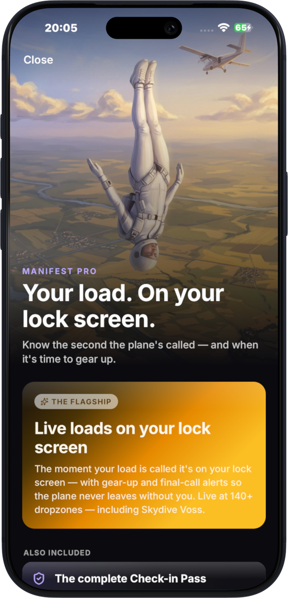
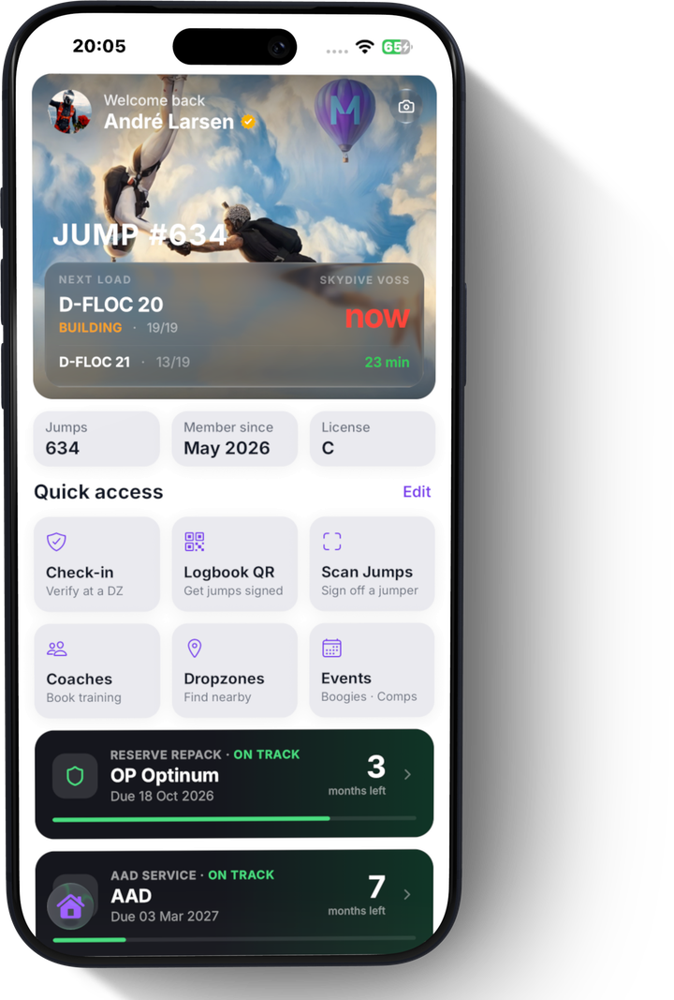

Every jump witnessed. Every rig current. Your proof, in seconds.
Soon on theApp Store

Goodbye trust-me-bro 🤝 Manifest builds a verified record of every jump and shows the dropzone 🪂 everything they need in one scan.
Every jump signed off by the jumpers who witnessed it — real proof, not paper.
Your licence and currency, scannable at any dropzone — check in in seconds.
Reserve repack and AAD service in one record — rigger-signed, always in date.
Notifications the second the plane's called, gear-up and final call, plus a live countdown in your Dynamic Island. So it never leaves without you.
No shouting across the hangar. No missed calls. No sprinting for the plane. Just your load on your lock screen, the second it's called.
⚡ Live at 140+ dropzones
Find dropzones near you or anywhere you're heading next, with conditions, loads and the details that actually matter.
Logging, verification and gear safety cost nothing — always. Pro adds the extras that make it effortless.
Seconds per jump. Works with no signal and syncs when you land.
Your indoor time, tracked alongside your jumps.
Bring every jump across by CSV from any other app or spreadsheet.
Another licensed jumper scans your QR — their name and licence go on the jump.
Licence, currency and jump numbers, scannable at the desk.
See your load and who's on it, straight from the DZ's board.
Rigs, canopies, reserves and AADs, with full service history.
Reserve repack and AAD dates before they catch you out.
Find them near you or anywhere you're heading next.
Discover what's on, RSVP, or host your own.
Find coaching by discipline and dropzone.
Follow other jumpers, see what they're jumping, and message them directly.
Know instantly whether you're current, before you get to the desk.
Your whole season, wrapped up and worth sharing.
Manifest is free to download, with no limit on how many jumps you log. Logging, getting jumps signed off, your Check-in Pass, live loads, gear service reminders, dropzones, events and community are all free. Manifest Pro adds your load on your lock screen with gear-up and final-call notifications, a live countdown in your Dynamic Island, branded PDF exports of your logbook and gear, and your pass in Apple Wallet. Pro is available monthly or annually, and starts with a free trial.
Yes. You can import your whole history from a CSV, whether it comes from another app or your own spreadsheet. Tunnel time and reserve repacks can be imported too.
Another licensed jumper who was there scans your QR and signs it off. Their name and licence number are recorded on that jump, so it is witnessed rather than self-reported. Your logbook shows your total jumps and your verified jumps side by side.
Logging, verification, your pass and your gear work anywhere in the world. Live loads currently work at 140+ dropzones, and we are adding more. If yours is not covered yet, everything else still works normally.
Yes. You can log jumps with no signal at all and they sync as soon as you are back online, which matters on a dropzone with bad wifi.
Your Check-in Pass shows your licence, currency, jump numbers and gear service in one scannable view, pulled straight from your record so it cannot be edited by hand. The person scanning it does not need the app. Pro also gives you a branded PDF of every signed-off jump.
Your logbook, credentials and documents are yours and are access-controlled. You choose what is public on your profile, you can go fully private, and you can delete your account and its data from inside the app at any time.
Manifest is launching on iPhone first so we can do it properly. Join the waitlist and we will let you know the moment Android is ready.
If you can't find the answer or need help, email me at andre@manifestjump.com